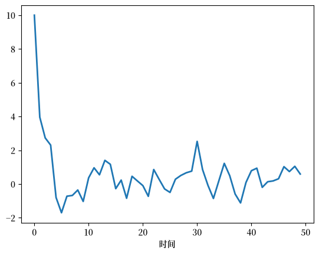
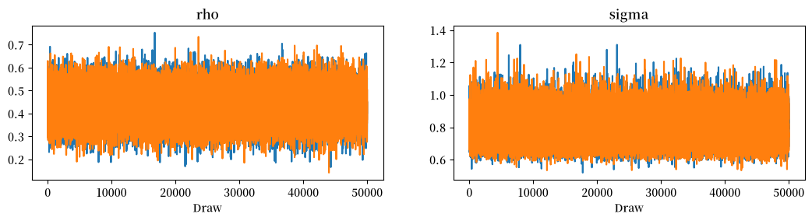
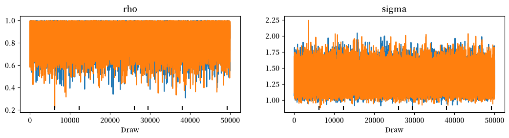
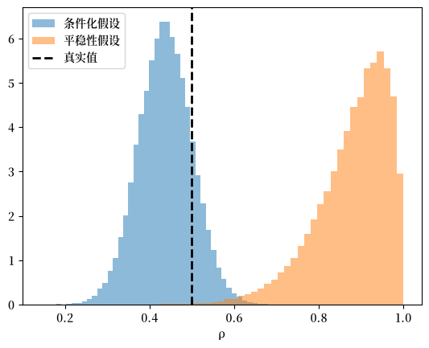
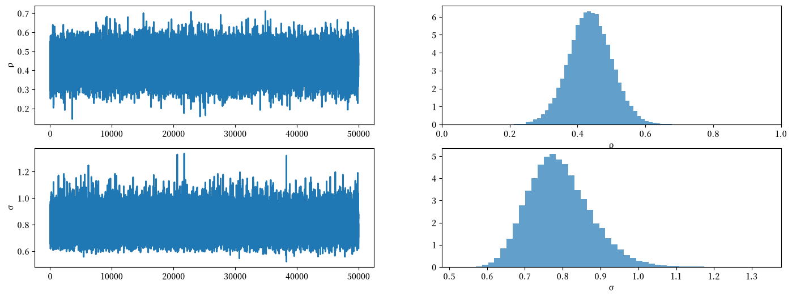
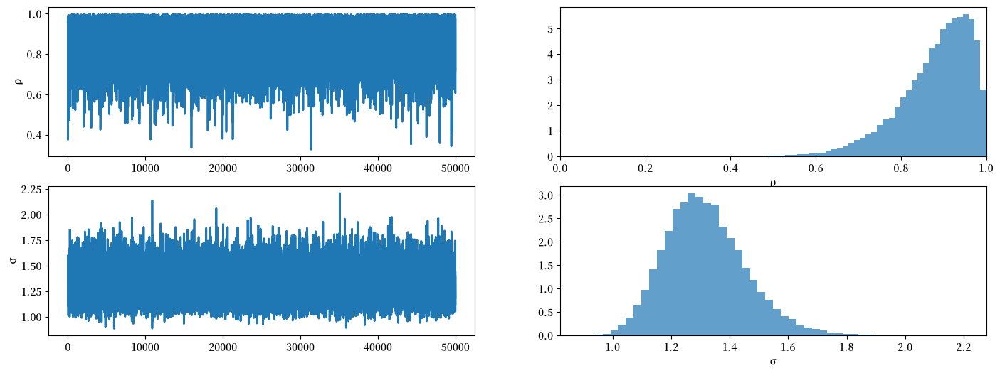
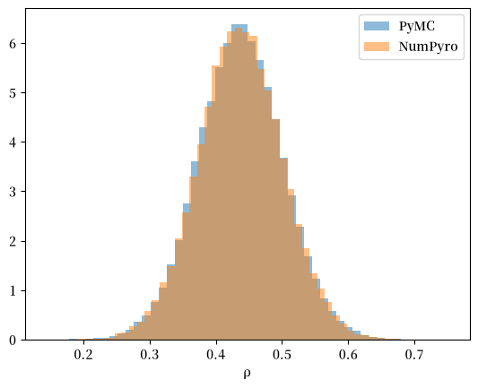

19. AR(1)参数的后验分布#
GPU
本讲座是在配有GPU的机器上构建的——不过没有GPU也可以运行。
Google Colab 提供带GPU的免费套餐，使用方法如下：
点击右上角的”播放”图标
选择 Colab
将运行时环境设置为包含GPU
除了Anaconda中包含的库之外，本讲座还需要以下库。
我们先安装numpyro和jax：
!pip install numpyro jax
我们还需要安装arviz和pymc：
!pip install arviz pymc
19.1. 概览#
本讲座使用pymc和numpyro提供的贝叶斯方法对一元一阶自回归模型的两个参数进行统计推断。
该模型是一个很好的实验平台，可以用来说明对初始值 \(y_0\) 分布采取不同建模方式所带来的后果：
将其视为一个固定数值
将其视为从 \(\{y_t\}\) 随机过程的平稳分布中抽取的随机变量
19.1.1. 模型设定#
统计模型的第一个组成部分是
其中
标量 \(\rho\) 和 \(\sigma_x\) 满足 \(|\rho| < 1\) 和 \(\sigma_x > 0\)
\(\{\epsilon_{t+1}\}\) 是一个均值为 \(0\)、方差为 \(1\) 的独立同分布正态随机变量序列。
统计模型的第二个组成部分是
未知参数是 \(\rho, \sigma_x\)。
我们有 \(\rho, \sigma_x\) 的独立先验概率分布，并希望在观察到样本 \(\{y_{t}\}_{t=0}^T\) 后计算后验概率分布。
我们想探究未知参数 \((\rho, \sigma_x)\) 的推断结果如何依赖于对 \(y_0\) 分布的参数 \(\mu_0, \sigma_0\) 所作的假设。
我们研究关于初始值 \(y_0\) 的两种假设，并在本讲座中始终以此名称指代它们。
在条件化假设下，我们将观测到的 \(y_0\) 视为给定值。
形式上，我们设 \((\mu_0, \sigma_0) = (y_0, 0)\)，因此 \(y_0\) 的密度在其观测值处是一个尖峰。
这个密度不依赖于 \(\rho\) 或 \(\sigma_x\)，所以 \(y_0\) 不携带关于参数的任何信息；实际上，我们是在以 \(y_0\) 为条件，只对其之后发生的事情建模。
在平稳性假设下，我们将 \(y_0\) 视为从该过程的平稳分布中抽取的一个样本，
这个密度确实依赖于 \(\rho\) 和 \(\sigma_x\)，所以此时观测到的 \(y_0\) 携带了关于参数的信息。
整篇讲座都在讨论这一个差异如何影响我们的估计结果。
备注
我们不考虑第三种可能的情况，即把 \(\mu_0, \sigma_0\) 当作待估计的自由参数。
19.1.2. 使用的库#
我们使用PyMC和NumPyro来计算 \(\rho, \sigma_x\) 的后验分布。
我们使用两个库，是因为它们做出了不同的权衡取舍。
PyMC提供了成熟且可读性很高的建模语法，并配有丰富的诊断工具集，这使得它便于学习和快速构建原型。
NumPyro建立在JAX之上，因此它能编译为高速机器码，并可在GPU上运行，这有助于它扩展到更大规模的模型和数据集。
由于两个库都能拟合同一个模型，将它们放在一起运行也能让我们核对二者结果是否一致。
这两个库都支持NUTS采样器，我们将用它从后验分布中抽取样本。
19.1.3. 导入#
我们先从导入一些Python包开始。
import arviz as az
import pymc as pm
import numpyro
from numpyro import distributions as dist
import numpy as np
import jax.numpy as jnp
from jax import random
import matplotlib.pyplot as plt
import matplotlib as mpl
FONTPATH = "fonts/SourceHanSerifSC-SemiBold.otf"
mpl.font_manager.fontManager.addfont(FONTPATH)
plt.rcParams['font.family'] = ['Source Han Serif SC']
import logging
logging.basicConfig()
logger = logging.getLogger('pymc')
logger.setLevel(logging.CRITICAL)
19.2. 估计#
让我们转向估计问题，先从似然函数开始。
19.2.1. 似然函数#
对于来自AR(1)模型的样本 \(\{y_t\}_{t=0}^T\)，似然函数可以分解如下：
（我们用 \(f\) 表示一般的概率密度。）
我们将使用贝叶斯定理，在两种不同假设下构建后验分布。
如上所述，我们选取初始值 \(y_0\) 的方式很重要。
如果我们相信 \(y_0\) 确实是从平稳分布中抽取的，那么平稳性假设是个好选择，因为这样 \(y_0\) 就携带了关于 \(\rho\) 和 \(\sigma_x\) 的有用信息。
如果我们怀疑 \(y_0\) 位于分布尾部很远的位置——以至于早期观测值带有较大的瞬态成分——那么条件化假设更好。
为了说明这个问题，我们将从选择一个位于平稳分布尾部很远的初始值 \(y_0\) 开始。
19.2.2. 模拟代码#
我们将使用模拟数据，固定参数 \(\rho\) 和 \(\sigma_x\)。
然后我们假装不知道这些参数，尝试在上述两种假设（条件化和平稳性）下对它们进行估计。
下面的函数从给定的初始条件模拟出AR(1)过程的一条路径。
def ar1_simulate(ρ, σ, y0, T, rng):
# 分配空间并抽取冲击
y = np.empty(T)
ε = rng.normal(0, σ, T)
# 初始条件并向前迭代
y[0] = y0
for t in range(1, T):
y[t] = ρ * y[t-1] + ε[t]
return y
我们使用以下参数设定。
σ_true = 1.0 # 固定σ_x的取值
ρ_true = 0.5 # 固定ρ的取值
我们模拟的时间序列将相对较短，这样先验分布才会起作用：
T = 50 # 时间序列长度
如上所述，我们选择一个位于平稳分布尾部很远的初始值 \(y_0\)：
y_0 = 10
现在让我们进行模拟并生成数据：
rng = np.random.default_rng(42)
y = ar1_simulate(ρ_true, σ_true, y_0, T, rng)
下面是模拟序列的图形。
fig, ax = plt.subplots()
ax.plot(y, lw=2)
ax.set_xlabel('时间')
plt.show()
WARNING:matplotlib.font_manager:findfont: Failed to find font weight normal, now using 600.

可以看到，初始条件异常地大——该序列迅速脱离这个初始值，并在一个较低的区间内波动。
19.2.3. PyMC实现#
在本节中，我们使用PyMC分别在关于 \(y_0\) 的两种假设下计算后验分布——首先是条件化假设，然后是平稳性假设。
在PyMC中，我们通过sigma参数以标准差 \(\sigma\) 来参数化每个正态分布。
AR1_model = pm.Model()
with AR1_model:
# 首先设定先验分布
ρ = pm.Uniform('rho', lower=-1., upper=1.) # 假设ρ是稳定的
σ = pm.HalfNormal('sigma', sigma=np.sqrt(10))
# 下一期y的期望值 (ρ * y)
yhat = ρ * y[:-1]
# 实际实现值的似然函数
y_like = pm.Normal('y_obs', mu=yhat, sigma=σ, observed=y[1:])
让我们来解读一下这个模型声明了什么。
在with AR1_model:代码块内，每个pm语句都向模型中添加一个随机变量。
前两行是先验分布——对 \(\rho\) 在 \((-1, 1)\) 上的均匀先验（这内在地保证了平稳性），以及对 \(\sigma\) 的半正态先验。
yhat = ρ * y[:-1] 这一行只是条件均值向量 \(\rho y_{t-1}\)（对 \(t = 1, \ldots, T\)）。
最后一行是似然函数：关键字observed=y[1:]告诉PyMC，y[1:]中的值是数据，抽自 \(N(\rho y_{t-1}, \sigma^2)\)。
因为yhat和y[1:]都是完整的向量，这一行代码就编码了上面分解式中的整个乘积 \(\prod_{t=1}^{T} f(y_t \mid y_{t-1})\)。
PyMC将这个似然函数与先验分布相乘，构成后验分布，我们将在下面从中抽样。
备注
请注意缺失的部分：我们从未写出 \(y_0\) 本身的密度。
它进入模型的唯一方式是在y[:-1]内部，作为第一次转移 \(f(y_1 \mid y_0)\) 的条件值——而不是模型需要解释的对象。
以这种方式省略 \(f(y_0)\) 这一项，正是条件化假设的体现。
pm.sample 默认使用NUTS采样器来生成样本，如下面的代码单元所示：
with AR1_model:
trace = pm.sample(50000, tune=10000, return_inferencedata=True)
我们绘制这两个参数的轨迹图和后验密度图。
with AR1_model:
az.plot_trace(trace)
WARNING:matplotlib.font_manager:findfont: Failed to find font weight normal, now using 600.

回想一下，我们生成数据时使用的是 \(\rho = 0.5\) 和 \(\sigma_x = 1\)。
后验分布集中在这些值附近，因此以 \(y_0\) 为条件能够相当好地恢复出参数，即使样本这么短。
备注
拟合效果不错，但并不精确—— \(\rho\) 的后验分布略低于其真实值。
这在一定程度上是经典的赫维奇偏差（Hurwicz bias）：在一阶自回归中，\(\rho\) 的最小二乘（从而也是后验）估计在小样本中存在向下的偏差，且随着样本量增大，这种偏差会逐渐缩小（参见Hurwicz [1950]和[Orcutt and Winokur, 1969]）。
以下是后验分布的数值汇总。
with AR1_model:
summary = az.summary(trace, round_to=4)
summary
| mean | sd | eti89_lb | eti89_ub | ess_bulk | ess_tail | r_hat | mcse_mean | mcse_sd | |
|---|---|---|---|---|---|---|---|---|---|
| rho | 0.4373 | 0.0635 | 0.3364 | 0.5388 | 94713.1607 | 67299.4419 | 1.0001 | 0.0002 | 0.0002 |
| sigma | 0.7923 | 0.0838 | 0.6708 | 0.9359 | 92657.7567 | 66057.6822 | 1.0001 | 0.0003 | 0.0002 |
现在，我们使用同样的数据，转而采用平稳性假设。
回想一下，这意味着
我们按如下方式修改代码：
AR1_model_y0 = pm.Model()
with AR1_model_y0:
# 首先设定先验分布
ρ = pm.Uniform('rho', lower=-1., upper=1.) # 假设ρ是稳定的
σ = pm.HalfNormal('sigma', sigma=np.sqrt(10))
# 平稳分布的标准差
y_sd = σ / np.sqrt(1 - ρ**2)
# 下一期y的期望值 (ρ * y)
yhat = ρ * y[:-1]
y_data = pm.Normal('y_obs', mu=yhat, sigma=σ, observed=y[1:])
# y0的密度——这一项施加了平稳性假设
y0_data = pm.Normal('y0_obs', mu=0., sigma=y_sd, observed=y[0])
与第一个模型唯一的区别就是最后那一行。
备注
这新加的一行为 \(y_0\) 添加了一个密度——即平稳密度 \(N\!\left(0, \sigma_x^2/(1-\rho^2)\right)\)——通过第二个observed项实现。
这恢复了我们之前舍弃的 \(f(y_0)\) 项，因此这正是平稳性假设。
其余部分完全相同，所以两个后验分布之间的任何差异，都完全来自这一项。
和之前一样，我们从后验分布中抽样。
with AR1_model_y0:
trace_y0 = pm.sample(50000, tune=10000, return_inferencedata=True)
在下面的轨迹图中，任何灰色垂直线都标记了采样器的发散点。
with AR1_model_y0:
az.plot_trace(trace_y0)

以下是后验分布的汇总。
with AR1_model_y0:
summary_y0 = az.summary(trace_y0, round_to=4)
summary_y0
| mean | sd | eti89_lb | eti89_ub | ess_bulk | ess_tail | r_hat | mcse_mean | mcse_sd | |
|---|---|---|---|---|---|---|---|---|---|
| rho | 0.8798 | 0.0854 | 0.7211 | 0.9820 | 54812.6710 | 44356.5527 | 1.0 | 0.0003 | 0.0003 |
| sigma | 1.3171 | 0.1387 | 1.1159 | 1.5565 | 68555.6862 | 56650.2527 | 1.0 | 0.0005 | 0.0004 |
当我们改变关于 \(y_0\) 的假设后，\(\rho\) 的后验分布明显发生了移动。
19.2.4. 比较两个后验分布#
让我们把 \(\rho\) 的两个后验分布放在一起，看看发生了什么变化。
下图叠加显示了两种假设下 \(\rho\) 的后验分布，虚线标出了真实值。
ρ_cond = trace.posterior['rho'].values.flatten()
ρ_stat = trace_y0.posterior['rho'].values.flatten()
fig, ax = plt.subplots()
ax.hist(ρ_cond, bins=50, density=True, alpha=0.5,
label='条件化假设')
ax.hist(ρ_stat, bins=50, density=True, alpha=0.5,
label='平稳性假设')
ax.axvline(ρ_true, color='k', linestyle='--', lw=2, label='真实值')
ax.set_xlabel('ρ')
ax.legend()
plt.show()

条件化假设下的后验分布接近真实值 \(0.5\)。
它的中心略低于 \(0.5\)，这就是前面提到的小样本赫维奇偏差——一种随样本量增大而减小的轻微向下拉力。
平稳性假设下的后验分布则不同：它被大幅推向右侧，趋近于 \(\rho = 1\)。
原因如下。
我们选择的初始值 \(y_0 = 10\) 位于平稳分布尾部很远的位置。
如果 \(y_0\) 真的是从该分布中抽取的，那么出现这样一个极端值的可能性会非常小。
所以，当我们强迫模型以这种方式解释 \(y_0\) 时，贝叶斯定律就会去寻找那些能使这个极端 \(y_0\) 变得可信的参数值。
它是这样做的：将 \(\rho\) 推向 \(1\)，因为更大的 \(\rho\) 会使平稳方差 \(\sigma_x^2 / (1 - \rho^2)\) 增大，从而使一个很大的 \(y_0\) 显得不那么令人惊讶。
因此，一个反常的起始值就会把整个后验分布拖离真实值。
这正是条件化假设在这里更准确的原因所在：它不会让一个非典型的观测值扭曲我们对 \(\rho\) 和 \(\sigma_x\) 的看法。
19.2.5. NumPyro实现#
我们现在用NumPyro重新做一遍这两个计算。
因为它拟合的是同样的两个模型，我们预期它的后验分布会与PyMC得到的结果相吻合。
模型是一样的，只是语法不同。
NumPyro将模型描述为一个普通的Python函数，而不是with代码块；每个numpyro.sample('name', distribution)所扮演的角色，与之前pm随机变量的角色相同；关键字obs=则是NumPyro中对应于PyMC的observed=的写法。
我们之前所说的关于先验分布、向量化似然函数，以及如何施加这两种假设的一切内容都原样适用；关于NumPyro模型更详细的介绍，参见非共轭先验。
我们先编写一个辅助函数，用来绘制所抽样参数的轨迹图和后验直方图。
def plot_posterior(sample):
"""
绘制轨迹图和直方图
"""
# 转换为np数组
ρs = np.array(sample['rho'])
σs = np.array(sample['sigma'])
fig, axs = plt.subplots(2, 2, figsize=(17, 6))
# 绘制轨迹
axs[0, 0].plot(ρs, lw=2)
axs[1, 0].plot(σs, lw=2)
# 绘制后验分布
axs[0, 1].hist(ρs, bins=50, density=True, alpha=0.7)
axs[0, 1].set_xlim([0, 1])
axs[1, 1].hist(σs, bins=50, density=True, alpha=0.7)
axs[0, 0].set_ylabel('ρ')
axs[1, 0].set_ylabel('σ')
axs[0, 1].set_xlabel('ρ')
axs[1, 1].set_xlabel('σ')
plt.show()
第一个模型使用条件化假设。
def AR1_model(data):
# 设置先验分布
ρ = numpyro.sample('rho', dist.Uniform(low=-1., high=1.))
σ = numpyro.sample('sigma', dist.HalfNormal(scale=np.sqrt(10)))
# 下一期y的期望值 (ρ * y)
yhat = ρ * data[:-1]
# 实际实现值的似然函数
y_data = numpyro.sample('y_obs', dist.Normal(loc=yhat, scale=σ), obs=data[1:])
我们把数据转换为JAX数组，构建NUTS采样器，然后运行MCMC。
# 创建jnp数组
y = jnp.array(y)
# 设置NUTS核心
NUTS_kernel = numpyro.infer.NUTS(AR1_model)
# 运行MCMC
mcmc = numpyro.infer.MCMC(NUTS_kernel, num_samples=50000, num_warmup=10000, progress_bar=False)
mcmc.run(rng_key=random.PRNGKey(1), data=y)
我们绘制轨迹图和后验分布图。
plot_posterior(mcmc.get_samples())

以下是后验分布的汇总。
mcmc.print_summary()
mean std median 5.0% 95.0% n_eff r_hat
rho 0.44 0.06 0.44 0.34 0.55 34102.04 1.00
sigma 0.79 0.08 0.78 0.66 0.93 34053.20 1.00
Number of divergences: 0
接下来我们采用平稳性假设，此时
以下是实现这一目标的新代码。
def AR1_model_y0(data):
# 设置先验分布
ρ = numpyro.sample('rho', dist.Uniform(low=-1., high=1.))
σ = numpyro.sample('sigma', dist.HalfNormal(scale=np.sqrt(10)))
# 平稳分布的标准差
y_sd = σ / jnp.sqrt(1 - ρ**2)
# 下一期y的期望值 (ρ * y)
yhat = ρ * data[:-1]
# 实际实现值的似然函数
y_data = numpyro.sample('y_obs', dist.Normal(loc=yhat, scale=σ), obs=data[1:])
# y0的密度——这一项施加了平稳性假设
y0_data = numpyro.sample('y0_obs', dist.Normal(loc=0., scale=y_sd), obs=data[0])
我们为这个模型构建采样器并运行MCMC。
# 设置NUTS核心
NUTS_kernel = numpyro.infer.NUTS(AR1_model_y0)
# 运行MCMC
mcmc2 = numpyro.infer.MCMC(NUTS_kernel, num_samples=50000, num_warmup=10000, progress_bar=False)
mcmc2.run(rng_key=random.PRNGKey(1), data=y)
我们再次绘制轨迹图和后验分布图。
plot_posterior(mcmc2.get_samples())

以下是后验分布的汇总。
mcmc2.print_summary()
mean std median 5.0% 95.0% n_eff r_hat
rho 0.88 0.08 0.90 0.76 1.00 33839.94 1.00
sigma 1.32 0.14 1.30 1.09 1.54 29823.84 1.00
Number of divergences: 0
与PyMC一样，一旦我们改用平稳性假设，\(\rho\)的后验分布就会向\(1\)移动。
为了确认这两个库结果一致，我们把它们在条件化假设下得到的\(\rho\)后验分布叠加在一起。
ρ_pymc = trace.posterior['rho'].values.flatten()
ρ_numpyro = np.array(mcmc.get_samples()['rho'])
fig, ax = plt.subplots()
ax.hist(ρ_pymc, bins=50, density=True, alpha=0.5, label='PyMC')
ax.hist(ρ_numpyro, bins=50, density=True, alpha=0.5, label='NumPyro')
ax.set_xlabel('ρ')
ax.legend()
plt.show()

两个后验分布对齐了，这正如我们所预期的那样。
19.3. 结论#
本讲座表明，我们对初始值 \(y_0\) 所作的假设，可能对我们估计AR(1)过程的结果产生很大影响。
当样本较短，且 \(y_0\) 可能是非典型值时，条件化假设是更安全的选择。
它让数据自己去说明 \(\rho\) 和 \(\sigma_x\)，而不必强迫模型去解释起始值。
平稳性假设增加了信息量，当该假设成立时，这种信息是有价值的。
但当 \(y_0\) 实际上远非典型值时，同样的假设就会误导我们——在这里，它把 \(\rho\) 推向 \(1\)，偏离了真实值。
一个简单的经验法则：
当早期观测值看起来具有瞬态性质，或起始点可能是非典型的时，使用条件化假设；
当你确信该过程一直在其长期行为附近运行时，使用平稳性假设。
参见
预测 AR(1) 过程 以这里计算出的后验分布为基础，用于预测AR(1)过程的非线性样本路径统计量，例如距离下一个转折点的时间。